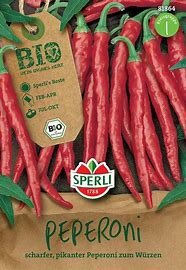
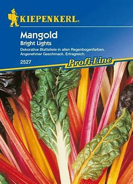
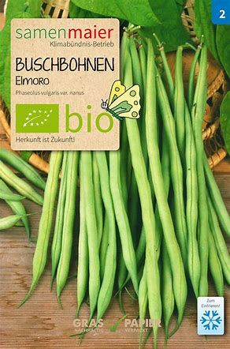
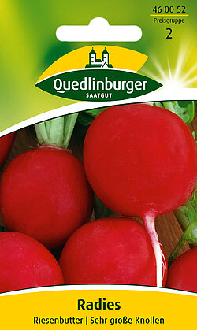
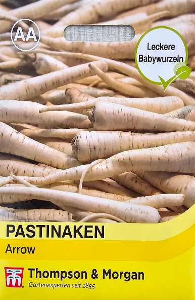
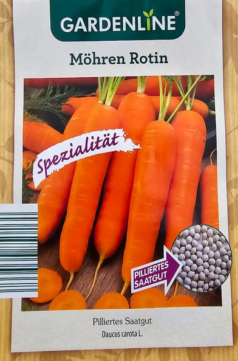
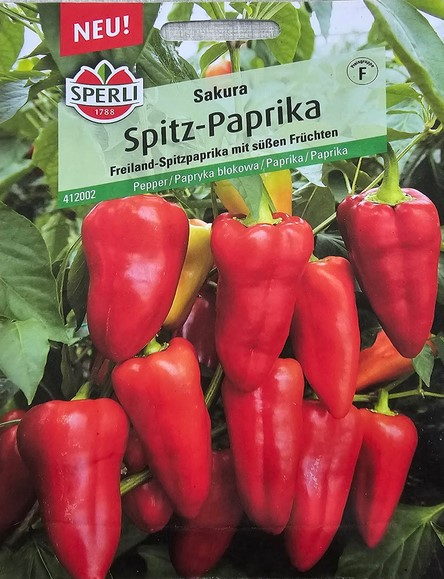
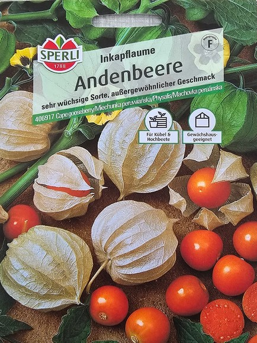

| Gemüseart: BIO-Peperoni |
Familie: Nachtschattengewächs |
Inhaltsmenge: ca. 30 Pflanzen |
Marke: Sperli |
Aussaatzeit: Februar bis April |
Erntezeit: Juli bis Oktober |
Standort: sonnig ☼ |
Kosten: 3.99 € |
 | |
| Beschreibung: | |||||||||
| Die langen, roten, vitaminreichen Früchte mit dünner Fruchtwand entwickeln in rohem Zustand einen scharfen, pikanten Geschmack. Sie eignen sich ideal zum Würzen scharfer Gerichte. Paprika lieben einen stets sonnigen, windgeschützten Platz und benötigen durchlässigen, nährstoffreichen Boden. Tipp: Die erste Blüte entfernen, damit die Pflanzen später schneller neue Früchte bilden. Ab Mitte Mai (frostfrei) ins Freiland verpflanzen. | |||||||||
| Gemüseart: Mangold |
Familie: Gänsefußgewächs |
Inhaltsmenge: ca. 50 Pflanzen |
Marke: Kiepenkerl |
Aussaatzeit: März bis Mai |
Erntezeit: Juni bis Oktober |
Standort: sonnig bis halbschattig ☼ ☀ |
Kosten: 2.99 € |
 | |
| Beschreibung: | |||||||||
| Dekorative Blattstiele in allen Regenbogenfarben. Angenehmer Geschmack. Ertragreich. Leuchtendrot, orange, rosa, gelb und weiß sind die kräftigen Stiele dieser besonders dekorativen Mangoldzüchtung gefärbt. Abgesehen davon, dass man sie als leckeres, vitaminreiches Gemüse in der Küche und die Blätter wie Spinat verwenden kann, sind die Pflanzen mit ihren großen Blättern sehr attraktiv. In Gartenbeeten, Schalen, als Beeteinfassung oder zwischen Staudenbeeten setzen sie in Gruppen oder Reihen gepflanzt ungewöhnliche Akzente. | |||||||||
| Gemüseart: Buschbohne Elmoro |
Familie: Hülsenfrucht |
Inhaltsmenge: ca. 25 Pflanzen |
Marke: Samen Maier |
Aussaatzeit: Mai bis Juli |
Erntezeit: Juli bis September |
Standort: sonnig ☼ |
Kosten: 2.99 € |
 | |
| Beschreibung: | |||||||||
| Buschbohnen verfügen über einen ausgezeichneten Geschmack. Anhäufeln verbessert die Standfestigkeit. Laufende Ernte steigert den Ertrag. Filetbohnen jung pflücken; in diesem frühen Stadium sind sie besonders zart. Für den Rohgenuss nicht geeignet! | |||||||||
| Gemüseart: Radies Riesenbutter |
Familie: Kreuzblütler |
Inhaltsmenge: ca. 5 lfd. Meter |
Marke: Quedlinburger Saatgut |
Aussaatzeit: März bis Juli |
Erntezeit: Mai bis September |
Standort: sonnig ☼ |
Kosten: 1.19 € |
 | |
| Beschreibung: | |||||||||
| Bekannte, mittelfrühe Sorte mit sehr großen, runden, hellroten Knollen und kräftigem Laub. Erreichen bis zu 8 cm Durchmesser, bleiben trotzdem zart und werden kaum pelzig. Mildwürziger Geschmack. Zum Frischverzehr, zur Salatherstellung und Dekoration. | |||||||||
| Gemüseart: Möhren Rotin |
Familie: Doldenblüter |
Inhaltsmenge: ca. 210 Korn |
Marke: Gardenline |
Aussaatzeit: März bis Juni |
Erntezeit: Juni bis August |
Standort: sonnig ☼ |
Kosten: 1.79 € |
 | |
| Beschreibung: | |||||||||
| Diese Möhre ist eine besonders wohlschmeckende Spezialzüchtung! Sie bietetekannte, mittelfrühe Sorte mit sehr großen, runden, hellroten Knollen und kräftigem Laub. Erreichen bis zu 8 cm Durchmesser, bleiben trotzdem zart und werden kaum pelzig. Mildwürziger Geschmack. Zum Frischverzehr, zur Salatherstellung und Dekoration. | |||||||||
| Gemüseart: Pastinaken |
Familie: Doldenblütler |
Inhaltsmenge: ca. 30 Korn |
Marke: Thompson & Morgan |
Aussaatzeit: April bis Juli |
Erntezeit: August bis November |
Standort: sonnig ☼ |
Kosten: 1.79 € |
 | |
| Beschreibung: | |||||||||
| Die schlanken, bajonettenförmigen Wurzeln sind ohne jegliche Körner, zart und süß im Geschmack. Wenn oft und in regelmäßigen Abständen gesät wird, können im Sommer und Herbst frische Wurzeln geerntet werden. Ideal zu Kultivierung in Töpfe mit einer Mindesttiefe von 37cm oder direkt im Freiland. | |||||||||
| Gemüseart: Radies Riesenbutter |
Familie: Kreuzblütler |
Inhaltsmenge: ca. 5 lfd. Meter |
Marke: Quedlinburger Saatgut |
Aussaatzeit: März bis Juli |
Erntezeit: Mai bis September |
Standort: sonnig ☼ |
Kosten: 1.19 € |
 | |
| Beschreibung: | |||||||||
| Bekannte, mittelfrühe Sorte mit sehr großen, runden, hellroten Knollen und kräftigem Laub. Erreichen bis zu 8 cm Durchmesser, bleiben trotzdem zart und werden kaum pelzig. Mildwürziger Geschmack. Zum Frischverzehr, zur Salatherstellung und Dekoration. | |||||||||
| Gemüseart: Radies Riesenbutter |
Familie: Kreuzblütler |
Inhaltsmenge: ca. 5 lfd. Meter |
Marke: Quedlinburger Saatgut |
Aussaatzeit: März bis Juli |
Erntezeit: Mai bis September |
Standort: sonnig ☼ |
Kosten: 1.79 € |
 | |
| Beschreibung: | |||||||||
| Bekannte, mittelfrühe Sorte mit sehr großen, runden, hellroten Knollen und kräftigem Laub. Erreichen bis zu 8 cm Durchmesser, bleiben trotzdem zart und werden kaum pelzig. Mildwürziger Geschmack. Zum Frischverzehr, zur Salatherstellung und Dekoration. | |||||||||